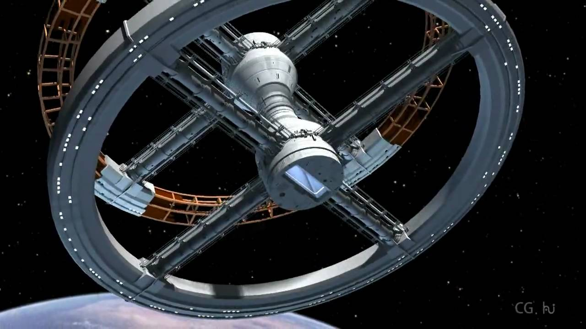

Un film qui marque un tournant dans les effets visuels
2001, L'Odyssée de l'espace, sorti 3 mois avant le premier homme sur la Lune, marque un tournant dans l'histoire des effets spéciaux. Le soin apporté à ceux-ci par Kubrick et les moyens qui leur sont consacrés, presque deux tiers du budget du film, rompent avec deux décennies de stagnation. Le film utilise des techniques anciennes réadaptées mais également nouvelles. Il reçoit le prix des meilleurs effets visuels en 1969. Ses effets sont si percutants, subtils et réalistes qu'ils deviennent une référence et un exemple pour des décennies à venir. Plus question à présent d'avoir des effets grossiers ou mal terminés. Le stop motion va en particulier être beaucoup plus utilisé à partir de ce moment là.
- Le slit scan : Il s'agit d'une animation créée image par image. Son principe repose sur le mouvement relatif de la caméra par rapport à une source lumineuse, associé à un temps d'exposition long. C'est de là que naissent les images psychédéliques du franchissement de la Porte des étoiles.
- Rétroprojection d'étoiles : la représentation de l'espace à l'époque était très rudimentaire et peu réaliste. Kubrick et son équipe ont utilisé de la rétroprojection à travers un écran parsemé de petits trous pour surmonter ce problème. Le résultat est convaincant et meilleur que tout ce qui avait été fait.
- Les maquettes : Les maquettes de navettes et de stations spatiales filmées en stop motion pour le réalisme de la gravité sont géantes, jusqu'à 17 mètres. Elles offrent au spectateur un univers de science-fiction crédible et réaliste. L'équipe d'éclairage a travaillé avec la NASA pour un rendu fidèle du rayonnement solaire sur les objets métalliques. Tout cela donne aux scènes spatiales de 2001 un niveau bien au delà de tous les films tournés jusqu'à présent.
- Travail optique : Pour créer l'oeil rouge de HAL, ils ont conçu des lentilles grand angle qui créaient l'illusion de profondeur et donc d'intelligence de l'IA HAL, en collaboration avec des artistes graphiques.
- Des effets intelligents : A l'image de son travail subtil d'effet spéciaux, une des scènes marquantes du film est lorsqu'une dame attrape un stylo flottant en vol. Celui-ci est fixé sur une plaque de verre qui tourne lentement, et le mouvement de la femme est synchronisé avec le mouvement du stylo pour donner un résultat précis et invisible.
- La projection frontale : permettant d'obtenir des fonds d'une définition visuelle meilleure qu'avec l'ancien procédé de la transparence, cette technique consiste non plus à rétroprojeter l'image du décor sur l'écran placé derrière les personnages filmés, mais à l'y projeter frontalement grâce à un projecteur placé à 90° par rapport à la caméra, dont le faisceau est renvoyé depuis l'emplacement de cette dernière par un miroir semi-aluminé placé à 45° devant la caméra qui agit comme une vitre pour celle-ci, la face placée du côté du projecteur étant pour sa part réfléchissante.
- La projection d'arrière-plan : À noter que dans la première séquence de 2001, c'est seulement l'arrière-plan qui est ainsi projeté, les acteurs qui interprètent les hominidés évoluant dans un décor minéral placé devant celui-ci.
- La rotation du set : Un effet réutilisé encore et encore par la suite, dans Poltergeist, Inception, Royal Wedding, est le plateau tournant. La caméra est placée fixe dans l'environnement qui tourne. Les objets sont tous factices et fixés dans la scène, mais l'acteur lui se retrouve tantôt au sol, tantôt sur les murs ou au plafond. 2001 est le premier à inventer cet effet très couteux, et les spectateurs de l'époque sont médusés.
